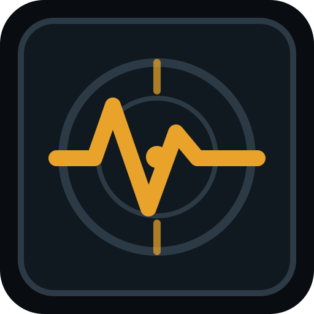

Route gate
Block live execution when fragility crosses the configured ceiling. Permit sandbox or paper routes only.

Signal AutopsySignal Autopsy turns an agent's trade idea into a replayable pre-mortem: market state, execution pressure, contradiction, guardrails, and a signed decision trail.
Built for teams that need AI trading agents to explain what can go wrong before they ask for capital, leverage, or live execution.
Hold live routing. Force paper execution until fragility cools below 45.
Feed the lab a thesis, market, confidence, and leverage profile. The system grades where the agent is brittle, then returns a decision that can be replayed later.
The agent has enough evidence to observe, but confidence and leverage are ahead of market confirmation.
The output is not advice floating in a chat window. It becomes an execution contract the agent must satisfy before it can route capital.
Block live execution when fragility crosses the configured ceiling. Permit sandbox or paper routes only.
Convert weak confirmation into lower leverage rather than a binary allow/deny workflow.
Expire stale pre-mortems quickly. The agent must re-justify if market state changes.
Escalate conflicting signals with the evidence package, not just a red warning label.
Signal Autopsy stores what the agent believed, what the market looked like, what guardrails fired, and who approved the route.
Risk should be inspectable before it becomes performance.For agent operators, quant desks, and reviewers who need more than a final PnL curve.
Before live orders, before leverage, before a clean-looking backtest, run the signal through a pre-mortem.
Start with a signal